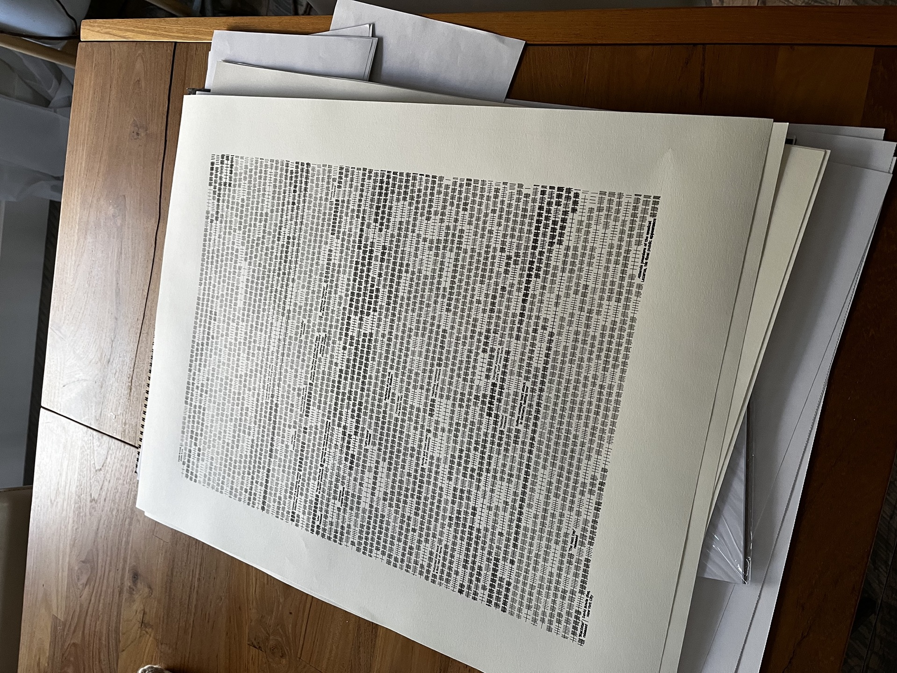
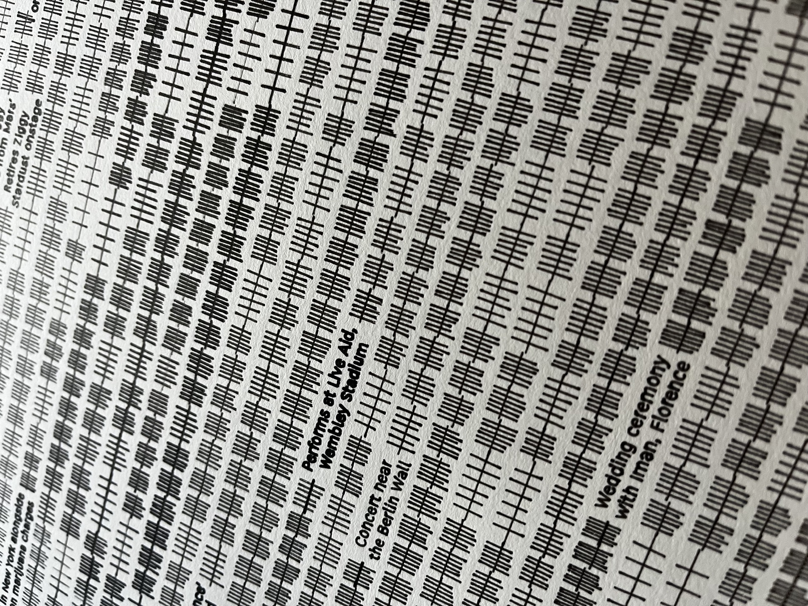
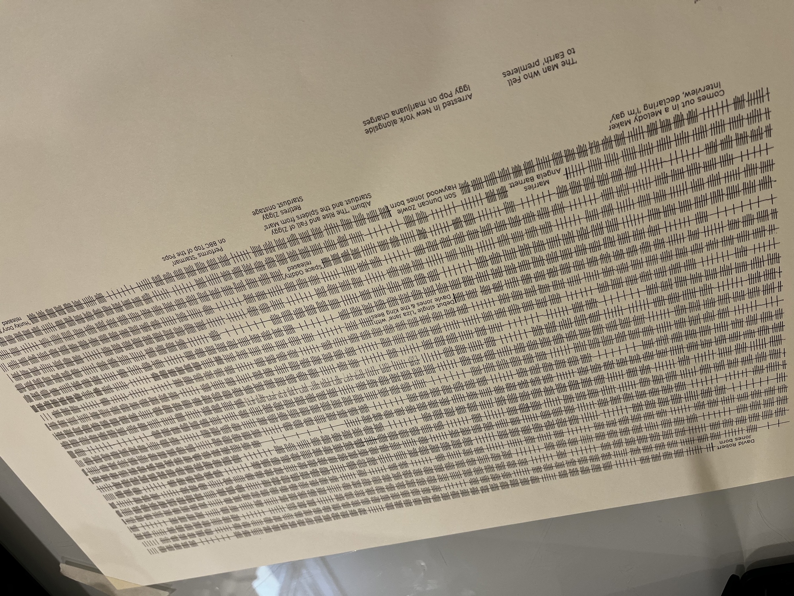
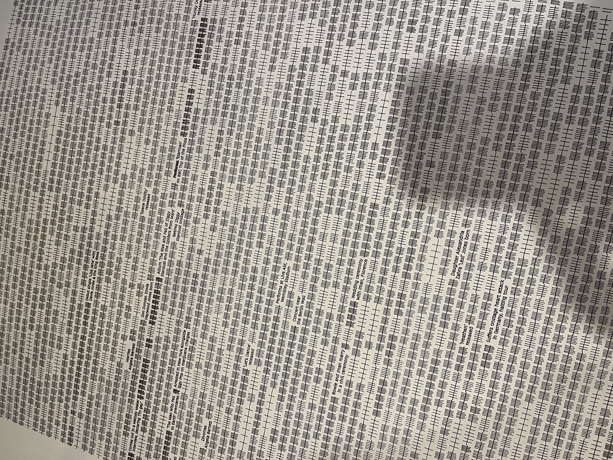

Record No. 001: David Bowie
The Shape of a Life.
Every individual line is a day and every group of hash marks (which are made up of 6 vertical and one horizontal) is a week. Each full row represents a full year. The whole piece is a life.
The Story Behind
the
Lines.
How I turn the lives of my favorite icons into physical pieces of art. The journey from deterministic code to the physical friction of an archival pen plot.
Watching Time Tick Off
I have spent many hours mesmerized, just watching the lines tick off, day by day, month by month, year by year. A standard print copies an image. But a pen plot is a performance. Each group of hash marks is a week of a real human life, drawn in sequence, one after another.
In my own life, I feel like ten years have flown by in a moment. One day I had a little toddler at home; now he's almost 13. These pieces make that kind of time tangible in a way I can't fully explain. You just feel it when you stand in front of one.
The Algorithm
I pick these iconic people because I love their work and want to better understand their lives. Each timeline is researched and curated to create a balance of history and time, translating the span of their life events into fluid, deterministic geometry.
A custom Python script then processes these inputs. I've spent over a year refining this code to ensure it derives a beautiful, flowing visual path for the plotter to follow.
The Layout
The transition from code to canvas requires human intuition. Every design is reviewed and carefully adjusted.
I print dozens of test prints for each piece, tweaking the hash mark spacing, text layout, and even the speed and pressure of the plotter to get it just right before the final plot begins.
Pen & Paper + Machine
Permanence is my priority. I utilize 300gsm acid-free cotton rag paper, chosen for its structural integrity and tactile grain, paired with lightfast carbon-based pigment ink (ISO 12757-2).
Every single piece is unique. The imperfections of pen on paper, the subtle vibrations of the studio, and the way the ink absorbs into the stock means no two plots are ever the same. I utilize a Bantam Tools NextDraw™ large format plotter for its mechanical precision, but it's the physical friction that gives the piece its soul. A single piece can take over 8 hours of plotting.


The Origin
A Man Who Wrote His Own Ending
David Bowie's Farewell
David Bowie released Blackstar on his 69th birthday, January 8, 2016, and died two days later. He'd kept his illness private for 18 months, making an album that, in retrospect, was clearly a farewell. The scale of that intentionality is a powerful thing.
I'd always been a massive Bowie fan. The way he lived and the way he chose to end: it was extraordinary. I became fixated on the idea of a life as a story, something with a shape and a structure you could actually see. That obsession sat with me for years, quietly, until 2021 when I finally figured out how to make it real.
View Bowie's Record
Record No. 001: David Bowie / Detail

Johnny Cash and the Rhythm of Resilience
In 2025, I visited the Johnny Cash Museum in Nashville. It's a relatively small space packed dense with the soaring highs and profound struggles of a musical legend. That experience crystallized a critical point of inspiration: scale matters.
The same life, whether compressed into a single room or expanded across a canvas, changes how you feel it. Seeing his entirety plotted out line-by-line, the quiet early days, the dark periods of addiction, and the triumphant American Recordings comeback, makes his resilience tangible. Every group of lines is a week fought, every row a year survived in the song of his life.
View Cash's Record